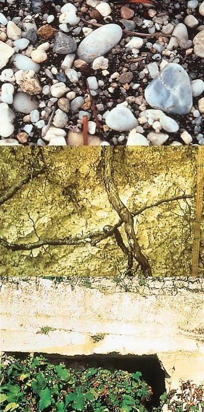

Bordeaux é a maior região de vinhos finos do mundo — e o coração da nossa confraria. Esta é a nossa academia: um guia essencial para apreciar, entender e falar com propriedade sobre os vinhos que nos unem.
Review da última safra
Safra 2025 · En PrimeurAtualizado em maio de 2026
A safra 2025 já nasce histórica. Descrita como um “clássico moderno”, teve um verão quente e seco salvo por chuvas decisivas no fim de agosto: colheita precoce, taninos completos, cores vibrantes e — surpresa — álcool moderado (12,5% a 13,6%) com frescor notável. Os rendimentos foram os mais baixos desde 1991, o que concentrou ainda mais os vinhos.
A crítica reagiu com entusiasmo raro. A Decanter deu 4,5/5 e chamou a safra de “paradoxal” e “miraculosa” — reunindo a estrutura de 2016, a elegância de 2019, o frescor de 2020, a profundidade de 2022 e o charme de 2023. Para Matthew Hemming MW, “pode ser a melhor safra que já provei de barril”. Em resumo: um possível grande clássico, ainda em barrica.
Destaques — notas de barril
Potenciais 100 pontos (Decanter): Beauséjour, Cheval Blanc, Haut-Bailly, Haut-Brion, Margaux, Mouton Rothschild, Pétrus e Vieux Château Certan. No topo da lista de James Suckling: Les Carmes Haut-Brion (a grande surpresa), Mouton Rothschild e Canon.
Cortada pelo rio Garonne e pelo estuário da Gironde, Bordeaux divide-se em duas grandes margens, cada uma com seu solo e seu estilo.
Margem Esquerda
Solos de cascalho que aquecem as raízes. Reino do Cabernet Sauvignon: vinhos estruturados, firmes e de longa guarda. Aqui ficam o Médoc e Graves.
Margem Direita
Solos de argila e calcário. Reino do Merlot: vinhos mais macios e sedutores já na juventude. Aqui ficam Saint-Émilion e Pomerol.

Os solos de Bordeaux: cascalho (graves) no alto, argila e calcário abaixo
As uvas de Bordeaux
Tintas
Cabernet Sauvignon— a alma da Margem Esquerda. De casca grossa e maturação tardia, ama o cascalho quente do Médoc: dá cor profunda, taninos firmes e aromas de cassis, grafite e cedro, feitos para décadas de guarda.
Merlot— a uva mais plantada e rainha da Margem Direita. Madura cedo e generosa, traz ameixa, cereja e maciez, deixando os vinhos sedutores já jovens; também “amacia” os cortes do Médoc.
Cabernet Franc— elegância e perfume. Aporta frescor, violeta, framboesa e um toque de folha e grafite; brilha em Saint-Émilion (como no Cheval Blanc).
Petit Verdot— o tempero. Em pequena dose, soma cor intensa, especiarias e estrutura. Madura muito tarde, só rende nos melhores anos.
Malbec & Carménère— castas históricas hoje quase desaparecidas em Bordeaux. O Malbec triunfou em Cahors e na Argentina; a Carménère renasceu no Chile.
Brancas
Sémillon— a base dos grandes brancos. Corpo cheio e textura cerosa, com mel e frutas brancas; envelhece com maestria. É a uva-mestra dos Sauternes, onde a botrytis a transforma em néctar dourado.
Sauvignon Blanc— frescor e nervo. Acidez vibrante, cítricos, buxo e maracujá. Faz brancos secos crocantes e, cortada com o Sémillon, os grandes brancos de Pessac-Léognan.
Muscadelle— a coadjuvante aromática. Em pequena dose, perfuma os cortes com flores e um toque de moscatel; raramente vinificada sozinha.
Principais denominações
Cada appellation (AOC) tem caráter próprio. As essenciais:
Pauillac
O coração do Médoc e berço de três dos cinco Premiers Crus (Lafite, Latour e Mouton). Cascalho profundo e Cabernet Sauvignon dominante dão tintos potentes, austeros na juventude e de guarda quase eterna, com cassis e grafite como assinatura.
Margaux
A mais extensa appellation do Médoc e a mais delicada em estilo. O cascalho fino dá tintos perfumados, florais e sedosos — elegância antes de potência. Château Margaux é o seu farol.
Saint-Julien
Sem nenhum Premier Cru, mas talvez a mais consistente do Médoc. Une a estrutura de Pauillac à finesse de Margaux: tintos clássicos e equilibrados, como Léoville-Las Cases e Ducru-Beaucaillou.
Saint-Estèphe
A mais ao norte do Médoc, com mais argila no solo. Tintos firmes, encorpados e tânicos, feitos para envelhecer — Cos d’Estournel e Montrose à frente.
Pessac-Léognan · Graves
O vinhedo histórico de Bordeaux, junto e ao sul da cidade. Produz tintos de taninos sedosos e fumê e os melhores brancos secos da região. Casa do Haut-Brion, único não-Médoc do 1855.
Saint-Émilion
A joia medieval da Margem Direita (Patrimônio da UNESCO). Calcário e argila, domínio do Merlot e perfume do Cabernet Franc. Tem classificação própria, revista a cada dez anos; vinhos ricos e acessíveis mais cedo.
Pomerol
A pequena e mítica appellation sem classificação oficial. Em argilas com “crasse de fer”, o Merlot atinge sua expressão mais opulenta e aveludada. Berço do lendário Pétrus e do Le Pin.
Sauternes & Barsac
O reino dos grandes doces. A névoa do rio Ciron favorece a botrytis (“podridão nobre”), que concentra o açúcar das uvas. Nascem vinhos dourados, untuosos e quase imortais — coroados pelo Château d’Yquem.
Haut-Médoc
A grande appellation que abraça as comunais do Médoc. Estilo intermediário e excelente custo-benefício, com crus classés como La Lagune e Cantemerle.
Entre-deux-Mers
Entre o Garonne e o Dordonha, a maior área de brancos secos de Bordeaux. Sauvignon e Sémillon vivos, cítricos e frescos — perfeitos para o dia a dia.
A pedido de Napoleão III, para a Exposição Universal de Paris, os corretores de Bordeaux classificaram os châteaux do Médoc em cinco níveis — e os de Sauternes e Barsac à parte. Quase 170 anos depois, segue praticamente intacta.
Médoc & Graves — tintos
Premiers Crus
Château Lafite RothschildPauillac
Château LatourPauillac
Château MargauxMargaux
Château Haut-BrionPessac · Graves
Château Mouton RothschildPauillac · 1973
Deuxièmes Crus
Rauzan-SéglaMargaux
Rauzan-GassiesMargaux
Léoville-Las CasesSaint-Julien
Léoville-PoyferréSaint-Julien
Léoville-BartonSaint-Julien
Durfort-VivensMargaux
Gruaud-LaroseSaint-Julien
LascombesMargaux
Brane-CantenacMargaux
Pichon-Longueville BaronPauillac
Pichon Comtesse de LalandePauillac
Ducru-BeaucaillouSaint-Julien
Cos d’EstournelSaint-Estèphe
MontroseSaint-Estèphe
Troisièmes Crus
KirwanMargaux
d’IssanMargaux
LagrangeSaint-Julien
Langoa-BartonSaint-Julien
GiscoursMargaux
Malescot St. ExupéryMargaux
Boyd-CantenacMargaux
Cantenac-BrownMargaux
PalmerMargaux
La LaguneHaut-Médoc
DesmirailMargaux
Calon-SégurSaint-Estèphe
FerrièreMargaux
Marquis d’Alesme BeckerMargaux
Quatrièmes Crus
Saint-PierreSaint-Julien
TalbotSaint-Julien
Branaire-DucruSaint-Julien
Duhart-MilonPauillac
PougetMargaux
La Tour CarnetHaut-Médoc
Lafon-RochetSaint-Estèphe
BeychevelleSaint-Julien
Prieuré-LichineMargaux
Marquis de TermeMargaux
Cinquièmes Crus
Pontet-CanetPauillac
BatailleyPauillac
Haut-BatailleyPauillac
Grand-Puy-LacostePauillac
Grand-Puy-DucassePauillac
Lynch-BagesPauillac
Lynch-MoussasPauillac
DauzacMargaux
d’ArmailhacPauillac
du TertreMargaux
Haut-Bages-LibéralPauillac
PédesclauxPauillac
BelgraveHaut-Médoc
de CamensacHaut-Médoc
Cos LaborySaint-Estèphe
Clerc-MilonPauillac
Croizet-BagesPauillac
CantemerleHaut-Médoc
Sauternes & Barsac — brancos doces
Premier Cru Supérieur
Château d’YquemSauternes
Premiers Crus
La Tour BlancheSauternes
Lafaurie-PeyragueySauternes
Clos Haut-PeyragueySauternes
de Rayne-VigneauSauternes
SuduirautSauternes
CoutetBarsac
ClimensBarsac
GuiraudSauternes
RieussecSauternes
Rabaud-PromisSauternes
Sigalas-RabaudSauternes
Deuxièmes Crus
de MyratBarsac
Doisy-DaëneBarsac
Doisy-DubrocaBarsac
Doisy-VédrinesBarsac
d’ArcheSauternes
FilhotSauternes
BroustetBarsac
NairacBarsac
CaillouBarsac
SuauBarsac
de MalleSauternes
Romer du HayotSauternes
LamotheSauternes
Lamothe-GuignardSauternes
Saint-Émilion tem a sua própria classificação, revista periodicamente. Pomerol, por tradição, não possui classificação oficial — e ainda assim abriga alguns dos vinhos mais cobiçados do mundo.
A Classificação de Saint-Émilion (2022)
Diferente da de 1855, a classificação de Saint-Émilion é revista cerca de cada dez anos. A edição de 2022 reúne 85 propriedades em três níveis. Na categoria máxima, “A”, ficaram apenas dois châteaux — Cheval Blanc, Ausone e Angélus optaram por não participar desta edição.
★ Orgulho da casa: o Château La Commanderie figura entre os Grands Crus Classés de Saint-Émilion.
A Classificação de Graves (1953)
Cem anos após a do Médoc, os melhores terroirs de Graves — na atual Pessac-Léognan — foram classificados em 1953 e revistos em 1959: 16 domínios, em tintos e brancos. O Château Haut-Brion é o único Bordeaux classificado duas vezes (1855 e nos Graves).
16 Crus Classés
Château Haut-Brion1855 e 1973 ★
Château Bouscaut
Château Carbonnieux
Château Couhins
Château Couhins-Lurton
Château de Fieuzal
Château Haut-Bailly
Château La Mission Haut-Brion
Château La Tour Haut-Brion
Château Latour-Martillac
Château Laville Haut-Brion
Château Malartic-Lagravière
Château Olivier
Château Pape Clément
Château Smith Haut Lafitte
Domaine de Chevalier
Pomerol — classificação não oficial
Pomerol, por tradição, não possui classificação oficial. Esta hierarquia não oficial, porém, é amplamente aceita — com o lendário Pétrus à parte, acima de todos.
Outros châteaux somam regularmente notas entre 95 e 100/100: Le Pin, Trotanoy, La Conseillante, La Fleur-Pétrus, Clinet, Gazin e La Fleur de Gay.
Crus Artisans do Médoc
Há mais de 150 anos, ao lado dos grandes domínios, as pequenas propriedades familiares do Médoc carregam o título de Cru Artisan. Desde 2006, 44 propriedades (cerca de 340 hectares) ostentam oficialmente a distinção.
Taça em formato tulipa, preenchida até um terço — a maior superfície revela os aromas. Vinhos jovens ganham ao arejar (“carafer”); vinhos antigos pedem decantação (“decanter”), para separar o depósito.
Guarda e curva de vida
Todo vinho tem a sua curva: evolução, maturidade e declínio. O potencial de guarda depende do tipo, da qualidade, da safra, do terroir e da vinificação.
Brancos secos frutados, rosés e clairets — beber jovens
Brancos de barrica e tintos leves — alguns anos
Tintos estruturados e grands crus — longa guarda
Doces, licorosos e grands crus — guarda excepcional
A adega ideal
Temperatura constante — 12 a 14 °C
Umidade — 70 a 80 %
Luz indireta, longe de vibrações e odores
Alternativa: adega climatizada
Curiosidades
Château— a propriedade onde o vinho é produzido.
Chai— a grande construção onde os vinhos repousam e amadurecem nas barricas.
Cuvier— o local onde o vinho é elaborado e fermenta.
Maître de chai— o responsável pela elaboração, criação e envelhecimento do vinho.
O vinho e a madeira: a barrica bordalesa — 225 litros de carvalho — permite uma troca lenta e contínua de oxigênio, que transforma o vinho e lhe dá notas de baunilha e tostado. O chai é um verdadeiro santuário.
A “Appellation d’Origine Contrôlée” garante a origem e a autenticidade do vinho. Um decreto define regras estritas que cada appellation deve respeitar:
Cepas autorizadas e área geográfica delimitada
Teor alcoólico mínimo e rendimento máximo por hectare
Métodos de cultivo, técnica de poda e vinificação
Condições de rotulagem
Desde 2008, regras mais rígidas e controles mais frequentes — do cultivo ao engarrafamento
O maior vinhedo AOC da França
650 milhões de litros por ano
65 denominações (appellations)
6 famílias de vinhos
Como ler um rótulo
O rótulo é a assinatura do vinho e um certificado de garantia. Os elementos essenciais:
Nome do vinho e da propriedade (Château, Domaine…)
A appellation (AOC) — a origem garantida
A safra (millésime) — o ano da colheita
Teor alcoólico e volume da garrafa
Nome e endereço do engarrafador
“Mis en bouteille au château” indica que o vinho foi engarrafado na própria propriedade — um selo de autenticidade. O “segundo vinho” traz o nome do château que o produziu, geralmente com as parcelas mais jovens.
Os 65 appellations de Bordeaux organizam-se em seis grandes famílias — por cor, estilo e margem.
1 · Brancos secos — frescor e elegância
Dois estilos: frescos e frutados (Entre-Deux-Mers, Bordeaux blanc), para beber jovens; e de guarda, criados em barrica (Graves, Pessac-Léognan), com notas amadeiradas.
Sauvignon · Sémillon · Muscadelle · ~10.000 ha · 16 crus classés em Graves
2 · Bordeaux & Bordeaux Supérieur — o dia a dia
A maior família (cerca de metade da produção): tintos frutados e frescos de toda a Gironde, além de rosés e do clairet — especialidade bordalesa entre o rosé e o tinto. O Supérieur tem regras mais estritas e passa por barrica.
Todas as cepas · Bordeaux, Bordeaux Supérieur, Rosé, Clairet, Crémant · ~57.000 ha
3 · As Côtes de Bordeaux — os tintos de altitude
Nas encostas (côtes), tintos de Merlot frutados e macios, de corpo médio, com ótima relação custo-benefício e bom potencial de guarda.
Merlot · Blaye, Côtes de Bourg, Castillon, Francs, Cadillac · ~18.000 ha
4 · Saint-Émilion, Pomerol & Fronsac — o império do Merlot
A margem direita, em solo argilo-calcário. Tintos aveludados, frutados e elegantes, acessíveis cedo mas com boa guarda. Saint-Émilion tem classificação própria, revista a cada dez anos.
Merlot e Cabernet Franc · Saint-Émilion, Pomerol, Fronsac, Lalande-de-Pomerol, Montagne…
5 · Médoc & Graves — o império do Cabernet Sauvignon
A margem esquerda, em cascalho. Tintos potentes, equilibrados e de grande guarda — o lar dos crus classés de 1855. Graves também produz brancos secos de alto nível.
Cabernet Sauvignon e Merlot · Pauillac, Margaux, Saint-Julien, Saint-Estèphe, Pessac-Léognan · ~20.000 ha · 1855 + Graves 1953
6 · Brancos licorosos — o ouro de Sauternes
A “podridão nobre” (botrytis) concentra o açúcar das uvas, criando vinhos doces, untuosos e imortais. Doces (4–45 g/l de açúcar) e licorosos (acima de 45 g/l).
A cada ano, a vinha segue um ciclo vegetativo dividido em etapas, ao ritmo das estações.
Inverno (nov–fev) — a vinha dorme e a seiva para de circular. É quando o viticultor faz a poda, escolhendo os brotos do ano seguinte.
Primavera (mar–jun) — a brotação: gomos, brotos e folhas; depois a floração, com pequenas flores.
Verão (jul–ago) — a véraison (mudança de cor das uvas) e o amadurecimento: menos acidez, mais açúcar e sabor.
Outono (set–out) — a colheita (vindima), manual ou mecânica; depois as folhas caem.
O enxerto
Após a filoxera, as videiras de Bordeaux passaram a ser enxertadas: a casta desejada (o garfo, que dá os frutos) sobre um porta-enxerto americano (a raiz), resistente à praga, que sustenta a planta e fornece água e nutrientes.
A poda
A poda regula a quantidade e a qualidade da produção. Três sistemas principais:
Gobelet — tradicional do Mediterrâneo, em forma de taça; não permite mecanização.
Guyot — o mais comum; tronco curto com um ou dois ramos arqueados num arame, adaptado à máquina.
Cordon de Royat — tronco mais longo com braços horizontais; ideal para castas produtivas e vindima mecânica.
A vinificação
Tintos: seleção das uvas maduras → desengace e esmagamento → fermentação alcoólica com maceração → prensagem → fermentação malolática → estabilização e preparação para o corte.
Brancos: seleção das uvas sãs → prensagem direta → decantação do mosto → fermentação alcoólica a baixa temperatura → estabilização e corte.
A degustação — os três exames
Exame visual — cor, limpidez e intensidade; a borda revela a idade.
Exame olfativo — os aromas: frutas, flores, especiarias, madeira, terra.
Exame gustativo — o ataque, o meio de boca, os taninos e o final; as sensações complexas.
 Academia de Bordeaux← VoltarPTENFR
Academia de Bordeaux← VoltarPTENFR